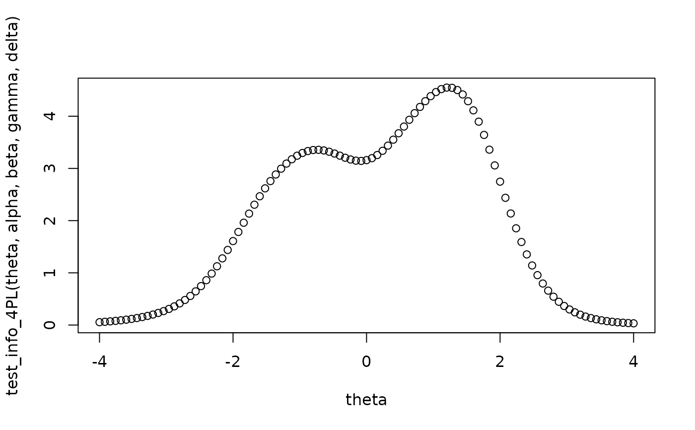

Estimate test information from logistic item response theory model.
Usage
test_info_4PL(
theta,
alpha,
beta,
gamma = rep(0, length(alpha)),
delta = rep(1, length(alpha))
)
error_variance_4PL(
lower = -Inf,
upper = Inf,
alpha,
beta,
gamma = rep(0, length(alpha)),
delta = rep(1, length(alpha)),
mean = 0,
sd = 1,
density_cutoff = 1e-10
)
reliability_4PL(
alpha,
beta,
gamma = rep(0, length(alpha)),
delta = rep(1, length(alpha))
)Arguments
- theta
Numeric. The respondent's level on the latent factor/construct.
- alpha
Numeric. The discrimination parameter of the item, indicating how steeply the item response changes with the person's (
theta).- beta
Numeric. The difficulty parameter of the item, indicating the expected count at a given level on the construct (
theta).- gamma
Numeric. The lower asymptote.
- delta
Numeric. The upper asymptote.
- lower
Numeric. The lower range of theta, for estimating error variance or reliability.
- upper
Numeric. The upper range of theta, for estimating error variance or reliability.
- mean
Numeric. Mean of normal latent variable.
- sd
Numeric. Standard deviation of normal latent variable.
- density_cutoff
Numeric. Cut-off value for very large or very small bounds needed for numerical stability.
Value
The amount of information for a given the test as a whole at each
of the values of theta specified. Based on test information, one can
estimate error variance and marginal reliability using
error_variance_4PL() and reliability_4PL(), respectively.
Details
Created by Philipp Doebler (doebler@statistik.tu-dortmund.de) and Loreen Sabel (loreen.sabel@tu-dortmund.de).
See also
Other IRT:
deriv_d_negBinom(),
discriminationToFactorLoading(),
fourPL(),
itemInformation(),
reliabilityIRT(),
standardErrorIRT()
Examples
test_info_4PL(0,1,0,0,1) # 0.25
#> [1] 0.25
test_info_4PL(-0.849, 1.1, -1, 0.2, 0.95) # Magis, 2013, Fig. 2
#> [1] 0.1757369
optimize(function(x)- test_info_4PL(x, 1.1, -1, 0.2, 0.95), c(-3, 3))
#> $minimum
#> [1] -0.8493521
#>
#> $objective
#> [1] -0.1757369
#>
# test
set.seed(23)
# parameters (some are totally unrealistic)
alpha <- runif(20,0.5,2.5)
beta <- runif(20,-2,2)
gamma <- runif(20,0,0.3)
delta <- runif(20,0.8,1)
error_variance_4PL(
lower = -Inf, upper = Inf,
alpha, beta, gamma, delta)
#> [1] 0.3416156
error_variance_4PL(
lower= -Inf, upper= Inf,
alpha, beta, gamma, delta,
density_cutoff = 1e-9)
#> [1] 0.3416145
error_variance_4PL(
lower= -Inf, upper= Inf,
alpha, beta, gamma, delta,
density_cutoff = 1e-8)
#> [1] 0.3416082
error_variance_4PL(
lower = -Inf, upper= Inf,
alpha, beta, gamma, delta,
density_cutoff = 1e-7)
#> [1] 0.3415734
reliability_4PL(alpha, beta, gamma, delta)
#> [1] 0.6583844
theta <- seq(-4, 4, length.out = 101)
plot(theta, test_info_4PL(theta, alpha, beta, gamma, delta))
